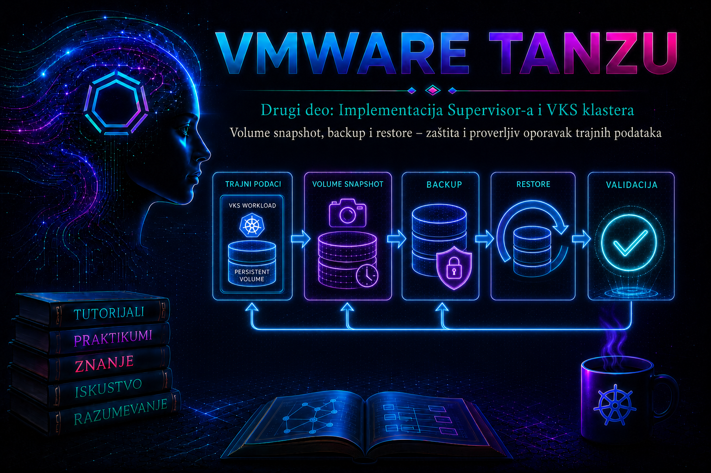

VMware & Tanzu

Prethodne lekcije povezale su PersistentVolumeClaim, vSphere CSI, StorageClass,
vSphere Storage Policy i storage topologiju. Ova lekcija zatvara životni ciklus trajnih podataka:
administrator mora da zna kako da napravi tačku oporavka, kako da je zaštiti od istog kvara koji može
uništiti izvorni volumen i, najvažnije, kako da dokazivo vrati aplikaciju u upotrebljivo stanje.
Postojanje objekta sa nazivom „snapshot” ili statusa Completed nije dokaz da je poslovni
servis moguće oporaviti.
U VKS klasteru zaštita stateful workload-a obuhvata najmanje dva različita sloja: Kubernetes objekte koji opisuju aplikaciju i podatke na trajnim volumenima. Za bazu podataka često postoji i treći sloj — aplikativni backup, kao što su logički dump, transaction log ili vendor-native backup katalog. Dobar plan oporavka povezuje sva tri sloja, određuje redosled vraćanja i meri ostvareni RPO i RTO.
1. Snapshot nije sinonim za backup
Volume snapshot je tačka-u-vremenu sadržaja jednog volumena koju storage sistem pravi preko CSI operacije. Obično nastaje brzo i pogodan je za kratkoročni rollback, kloniranje podataka i pravljenje nove kopije pre rizične promene. Međutim, snapshot često ostaje u istom vCenter-u, na istom storage sistemu i u istoj administrativnoj zoni kao izvor. Zato sam po sebi ne štiti od gubitka datastora, storage politike, vCenter baze, kompromitovanog administratorskog naloga ili katastrofe lokacije.
Backup je kontrolisana, katalogizovana i politikom zadržavanja zaštićena kopija Kubernetes resursa i podataka, po mogućstvu u nezavisnom failure domain-u. Backup rešenje može da orkestrira CSI snapshot, ali tek data movement — prenos podataka u odvojeno object skladište ili drugi podržani repozitorijum — uklanja zavisnost od lokalnog snapshot-a. Restore je postupak rekonstrukcije resursa i podataka, dok je recovery širi proces kojim se potvrđuje da je aplikacija konzistentna, dostupna i prihvatljiva vlasniku servisa.
| Mehanizam | Šta štiti | Tipična upotreba | Ključno ograničenje |
|---|---|---|---|
| CSI volume snapshot | Sadržaj jednog CSI volumena u određenom trenutku | Brz lokalni rollback, testni klon, zaštita pre promene | Najčešće deli failure domain sa izvornim volumenom; ne sadrži sve Kubernetes objekte |
| Velero backup sa CSI snapshot-om | Kubernetes resurse i metapodatke snapshot-a | Namespace/workload restore i automatizovana politika | Bez data mover-a snapshot može ostati vezan za isti storage i isti vCenter |
| CSI Snapshot Data Movement | Podatke snapshot-a prenete u backup repozitorijum | Otpornost na kvar izvornog storage-a i oporavak na kompatibilnom odredištu | Traži object storage, node-agent, kapacitet, propusni opseg i kompatibilne verzije |
| File System Backup | Fajlove sa montiranog volumena | Volume tip bez podržanog CSI snapshot-a ili prenosivija kopija | Sporiji je, troši resurse čvora i kopija aktivnog filesystem-a može biti nekonzistentna |
| Aplikativni backup | Logički konzistentne objekte aplikacije, baze i transakcione logove | Point-in-time recovery, granularni povratak i dokaz konzistentnosti | Zahteva aplikativni postupak, naloge, katalog i usklađivanje sa infrastrukturnim backup-om |
2. Ciljevi oporavka i odgovornost administratora
RPO određuje najveći prihvatljiv gubitak podataka izražen vremenom, a RTO najveće prihvatljivo vreme prekida. Ako je backup na svaka 24 časa, projektovani RPO nije jedan čas bez obzira na brzinu snapshot-a. Ako vraćanje 2 TB podataka preko ograničene mreže traje deset sati, RTO od dva časa nije ostvariv. Zato se ciljevi ne prepisuju iz politike: mere se kontrolisanim testovima sa realnim obimom podataka, realnim ograničenjem mreže i svim koracima od prijave incidenta do poslovne validacije.
- Vlasnik aplikacije definiše kritične podatke, prihvatljiv RPO/RTO i test funkcionalnosti.
- Platform tim štiti Kubernetes resurse, CSI volumene, tajne u skladu sa politikom i dokumentuje redosled restore-a.
- Storage/vSphere tim obezbeđuje podržanu CSI funkcionalnost, kapacitet, politike i prati CNS/FCD stanje.
- Security tim kontroliše pristup repozitorijumu, enkripciju, nepromenljivost, audit i odvojene naloge.
- Backup operator prati poslove, životni ciklus kopija i greške; status posla ne proglašava dokazom oporavljivosti bez restore testa.
3. CSI snapshot arhitektura i tok zahteva
Kubernetes Volume Snapshot API je stabilan od Kubernetes 1.20, ali objekti
VolumeSnapshot, VolumeSnapshotContent i VolumeSnapshotClass jesu
CRD resursi, a ne deo osnovnog API-ja. Distribucija mora da instalira odgovarajuće CRD-ove,
snapshot-controller i validating webhook; CSI drajver mora da podrži snapshot operacije, a njegov
csi-snapshotter sidecar prevodi zahtev u poziv storage sistemu.
- Korisnik u namespace-u kreira
VolumeSnapshoti kao izvor navodi PVC. - Snapshot controller bira
VolumeSnapshotClassi formira jedan-na-jedan vezu sa cluster-scoped objektomVolumeSnapshotContent. csi-snapshotterpoziva vSphere CSI endpoint, a CSI drajver preko CNS-a traži backend snapshot FCD volumena.- Status,
snapshotHandle, vreme kreiranja, veličina ireadyToUsevraćaju se u Kubernetes API. - Restore se ne vrši „preko” postojećeg PVC-a: kreira se novi PVC čiji
dataSourcepokazuje na spremanVolumeSnapshot.
Dinamički snapshot nastaje iz PVC-a na zahtev. Pre-provisioned model koristi već postojeći backend
snapshot koji administrator predstavlja objektom VolumeSnapshotContent. Za svakodnevni
rad dinamički model je jednostavniji; pre-provisioned model zahteva naročitu pažnju prema
snapshotHandle, CSI driver imenu, namespace vezi i politici brisanja.
4. Preduslovi i verzijska ograničenja
Ne pretpostavljati podršku samo zato što klaster koristi CSI. Na konkretnom VKS izdanju proveriti vSphere Supervisor dokumentaciju, VKS/TKG release notes, vSphere CSI compatibility matricu i dokumentaciju izabranog backup proizvoda. Broadcom KB za integracije koje prijavljuju da CSI snapshot nije spreman navodi minimum vSphere 7.0 P03+ i vSphere CSI 2.5.0+, ali to je donja granica konkretnog scenarija, a ne preporuka za novu produkciju. Podržana kombinacija uvek je ona koju potvrđuje matrica za tačnu verziju Supervisor-a, VKS klastera, CSI drajvera i backup alata.
Nazivi proizvoda su se menjali: starija dokumentacija koristi vSphere with Tanzu, Tanzu Kubernetes Grid Service i TKG Service cluster, dok novija izdanja koriste vSphere Supervisor i vSphere Kubernetes Service (VKS). Arhitektonska ideja je slična, ali instalacione komande, ugrađene komponente i podržane Velero verzije nisu nužno prenosive između izdanja. Posebno ne kopirati istorijske procedure za Velero Plugin for vSphere u savremenu CSI/Data Mover implementaciju bez potvrde u dokumentaciji ciljne verzije.
Pre projektovanja ili testa proveriti sledeće:
- CRD-ove, snapshot-controller i webhook, a zatim odgovarajući
VolumeSnapshotClass; - da
driveru snapshot klasi odgovara CSI drajveru PV-a, tipičnocsi.vsphere.vmware.comkada to potvrđuje instalirano okruženje; - podržan tip volumena, access mode, datastore i storage policy; podrška za block i file/RWX volume nije ista u svim izdanjima;
- maksimalan broj snapshot-a po volumenu i uticaj postojećih snapshot-a na proširenje PVC-a;
- slobodan kapacitet i performanse izvornog storage-a, backup repozitorijuma, mreže i data mover podova;
- kompatibilnost izvornog i odredišnog CSI driver imena, vCenter-a, storage-a i topologije;
- RBAC, mrežni izlaz, DNS, vreme, sertifikate, kredencijale, KMS i politiku životnog ciklusa object storage-a.
5. Konzistentnost: crash-consistent nije isto što i application-consistent
Snapshot aktivnog volumena je najčešće crash-consistent: predstavlja ono što bi
storage video posle iznenadnog nestanka napajanja. Journaling filesystem se obično oporavi, ali
transakcije u memoriji, write cache, podaci raspoređeni na više PVC-ova i aplikativne zavisnosti mogu
ostati u semantički neispravnom stanju. Status readyToUse: true potvrđuje da je storage
snapshot spreman za upotrebu, ne da je baza prošla recovery niti da su poslovni podaci tačni.
Za application-consistent tačku oporavka koristi se dokumentovana procedura aplikacije: quiesce, flush i freeze, pre-backup hook, operator-native backup ili kratko kontrolisano zaustavljanje writer podova. Posle snapshot-a aplikacija mora biti bezuslovno vraćena u rad čak i kada backup ne uspe; hook skripta zato mora imati timeout, audit trag i recovery granu. Kod više PVC-ova redosled pojedinačnih snapshot-a ne daje atomsku grupu. CSI VolumeGroupSnapshot postoji u novijem Kubernetes ekosistemu, ali njegova dostupnost zavisi od verzije distribucije, uključenih feature gate-ova i podrške CSI drajvera; ne treba je pretpostaviti u VKS klasteru bez eksplicitne matrice podrške.
6. VolumeSnapshotClass i politika brisanja
VolumeSnapshotClass je cluster-scoped administratorski objekat. Polje
deletionPolicy je obavezno. Vrednost Delete briše povezani
VolumeSnapshotContent i backend snapshot kada se obriše VolumeSnapshot;
Retain ostavlja sadržaj i backend snapshot, pa administrator preuzima odgovornost za
inventar, ručno uklanjanje i trošak. Klasa ne treba da se menja neformalno posle kreiranja kopija.
apiVersion: snapshot.storage.k8s.io/v1
kind: VolumeSnapshotClass
metadata:
name: vsphere-csi-snap-retain
driver: csi.vsphere.vmware.com
deletionPolicy: Retain
Primer je šablon: ime drajvera i podršku mora potvrditi stvarni klaster. Za ad hoc laboratorijski
snapshot pogodniji može biti Delete, dok je Retain razumniji kada se sadržaj
mora sačuvati posle slučajnog brisanja namespaced zahteva. Backup proizvod može tokom brisanja svog
backup-a namerno promeniti politiku i ukloniti prateći snapshot; zato retencija backup proizvoda, a ne
samo deklaracija klase, određuje stvarni životni vek kopije.
7. Projektovanje produkcione zaštite
| Odluka | Pitanje koje mora biti odgovoreno | Dokaz |
|---|---|---|
| Obuhvat | Koji namespace-i, cluster-scoped resursi, PVC-ovi, CRD/CR objekti i tajne su potrebni? | Mapa zavisnosti i probni restore u prazan namespace/klaster |
| Konzistentnost | Da li je dovoljan crash recovery ili aplikacija zahteva hook/operator-native backup? | Log baze, integrity check i potpis vlasnika aplikacije |
| Failure domain | Da li kopija preživljava gubitak datastora, vCenter-a, naloga i lokacije? | Data mover/object kopija, odvojeni kredencijali i test alternativnog odredišta |
| Retencija | Koliko generacija, koliko dugo i ko sme da ih obriše? | Politika, object lock/immutability gde je podržano i audit događaji |
| Kapacitet | Koliki su change rate, prozor backup-a, egress i prostor za privremene PVC-ove? | Merenje trajanja, potrošnje i najgoreg restore slučaja |
| Oporavak | Ko odlučuje, kojim redosledom se vraća i kada se servis predaje korisnicima? | Runbook, RACI, vežba i izmereni RPO/RTO |
Primeni princip 3-2-1 kao cilj, ne kao marketinšku oznaku: najmanje tri primerka podataka, na dva različita medija ili sistema, sa najmanje jednom kopijom van primarnog failure domain-a. Za ransomware scenario potrebna je i kopija koju kompromitovani cluster ili svakodnevni administratorski nalog ne može da prepiše ili obriše. Kredencijali backup sistema, enkripcioni ključevi i procedure za njihov recovery deo su plana; enkriptovana kopija bez dostupnog ključa nije upotrebljiva kopija.
8. Praktikum – od CSI snapshot-a do dokazivog restore-a
Cilj: napraviti kontrolisanu tačku oporavka jednog PVC-a, vratiti je u novi PVC,
dokazati integritet podataka, zatim proveriti kako backup alat štiti Kubernetes resurse i podatke van
lokalnog snapshot-a. Laboratorija koristi namespace snapshot-lab; sva imena i klasu
storage-a prilagoditi svom klasteru.
Topologija i nalozi: administratorska radna stanica sa kompatibilnim
kubectl i, za backup deo, velero CLI; VKS kontekst sa pravom kreiranja resursa
u laboratorijskom namespace-u; platform administrator za read-only proveru cluster-scoped snapshot
resursa. Kreiranje klase i instalacija kontrolera nisu zadatak običnog namespace korisnika.
Rizik: vežba je laboratorijska. Ne brisati izvorni PVC niti menjati
VolumeSnapshotContent u produkciji. Pre svake state-changing komande potvrditi kontekst i
namespace. Čišćenje snapshot-a sa politikom Delete uklanja backend tačku oporavka.
8.1. Predprovera – samo čitanje stanja
kubectl config current-context
kubectl auth can-i create volumesnapshots.snapshot.storage.k8s.io -n snapshot-lab
kubectl api-resources --api-group=snapshot.storage.k8s.io
kubectl get crd volumesnapshots.snapshot.storage.k8s.io \
volumesnapshotcontents.snapshot.storage.k8s.io \
volumesnapshotclasses.snapshot.storage.k8s.io
kubectl get volumesnapshotclass
kubectl get csidriver
kubectl get storageclassSve komande su read-only. Očekuju se tri snapshot API resursa, najmanje jedna odgovarajuća klasa i CSI driver koji upravlja izabranim PV-om. Ako API server prijavi da tip resursa ne postoji, ne primenjivati manifeste: proveriti podržani način omogućavanja snapshot komponenti za tačno VKS izdanje. Ručna instalacija upstream CRD-ova u vendor-managed klaster bez dokumentovane procedure može napraviti nepodržanu kombinaciju.
kubectl get pvc -n snapshot-lab
kubectl get pvc app-data -n snapshot-lab \
-o jsonpath='{.spec.storageClassName}{"\n"}{.spec.volumeName}{"\n"}'
PV_NAME=$(kubectl get pvc app-data -n snapshot-lab -o jsonpath='{.spec.volumeName}')
kubectl get pv "$PV_NAME" \
-o jsonpath='{.spec.csi.driver}{"\n"}{.spec.csi.volumeHandle}{"\n"}{.spec.nodeAffinity}{"\n"}'Poslednja provera povezuje PVC sa StorageClass-om, PV-om, CSI drajverom, backend volume handle-om i topologijom. Varijabla važi samo u tekućem shell-u; komande ne menjaju klaster. Sačuvati izlaz u change/incident evidenciji bez objavljivanja osetljivih identifikatora.
8.2. Kreiranje kontrolnog podatka i snapshot-a
U postojećem laboratorijskom podu koji montira app-data kreirati mali marker. Komanda menja
podatke u laboratorijskom volumenu; naziv poda i mount putanju prilagoditi manifestu aplikacije.
kubectl exec -n snapshot-lab deploy/snapshot-demo -- sh -c '
date -u +%FT%TZ > /data/created-before-snapshot.txt
sha256sum /data/created-before-snapshot.txt > /data/checksums.sha256
sync
'
kubectl exec -n snapshot-lab deploy/snapshot-demo -- \
sh -c 'cat /data/created-before-snapshot.txt && cat /data/checksums.sha256'
sync umanjuje rizik da marker ostane samo u OS cache-u, ali ne predstavlja univerzalni
application-consistent postupak. Za bazu koristiti njen dokumentovani flush/quiesce ili backup alat.
apiVersion: snapshot.storage.k8s.io/v1
kind: VolumeSnapshot
metadata:
name: app-data-before-change
namespace: snapshot-lab
labels:
app.kubernetes.io/name: snapshot-demo
tashizza.com/purpose: pre-change
spec:
volumeSnapshotClassName: vsphere-csi-snap-retain
source:
persistentVolumeClaimName: app-data
Manifest menja stanje i pokreće backend snapshot. Sačuvati ga kao
app-data-snapshot.yaml, pregledati vrednost klase, zatim primeniti:
kubectl apply -f app-data-snapshot.yaml
kubectl get volumesnapshot app-data-before-change -n snapshot-lab -w
Prekinuti praćenje sa Ctrl+C kada READYTOUSE postane
true. Zatim prikupiti dokaz bez menjanja stanja:
kubectl describe volumesnapshot app-data-before-change -n snapshot-lab
SNAP_CONTENT=$(kubectl get volumesnapshot app-data-before-change -n snapshot-lab \
-o jsonpath='{.status.boundVolumeSnapshotContentName}')
kubectl get volumesnapshotcontent "$SNAP_CONTENT" -o yaml
kubectl get events -n snapshot-lab \
--field-selector involvedObject.name=app-data-before-change \
--sort-by=.lastTimestamp
Kriterijum uspeha je readyToUse: true, popunjen
boundVolumeSnapshotContentName, odsustvo upozoravajućih događaja i vidljiv backend
snapshot u podržanom vSphere/CNS prikazu. Ne prepisivati snapshotHandle u tiket koji je
dostupan neovlašćenim korisnicima.
8.3. Restore u novi PVC
Kubernetes standardni restore iz snapshot-a kreira novi volumen. Zahtevana veličina ne sme biti manja od izvorne snapshot veličine, a StorageClass mora biti kompatibilan sa CSI drajverom, politikom i topologijom. Snapshot i novi PVC u ovom primeru nalaze se u istom namespace-u.
apiVersion: v1
kind: PersistentVolumeClaim
metadata:
name: app-data-restored
namespace: snapshot-lab
spec:
accessModes:
- ReadWriteOnce
storageClassName: vks-storage-policy
resources:
requests:
storage: 5Gi
dataSource:
name: app-data-before-change
kind: VolumeSnapshot
apiGroup: snapshot.storage.k8s.io
Vrednosti accessModes, storageClassName i veličine preuzeti iz izvornog PVC-a,
osim kada je dokumentovano da odredište podržava promenu. Manifest sačuvati kao
restored-pvc.yaml i primeniti:
kubectl apply -f restored-pvc.yaml
kubectl get pvc app-data-restored -n snapshot-lab -w
kubectl describe pvc app-data-restored -n snapshot-lab
Kada PVC postane Bound, montirati ga u izolovan verifikacioni pod, bez istovremenog
priključivanja produkcionoj aplikaciji. Kod ReadWriteOnce topologija i attach pravila mogu
zahtevati da pod bude raspoređen na odgovarajući čvor; WaitForFirstConsumer može odložiti
provisioning dok se pod ne kreira.
apiVersion: v1
kind: Pod
metadata:
name: restore-verifier
namespace: snapshot-lab
spec:
restartPolicy: Never
containers:
- name: verifier
image: busybox:1.36
command: ["sh", "-c", "sleep 3600"]
volumeMounts:
- name: restored
mountPath: /restore
readOnly: true
volumes:
- name: restored
persistentVolumeClaim:
claimName: app-data-restored
readOnly: truekubectl apply -f restore-verifier.yaml
kubectl wait -n snapshot-lab --for=condition=Ready pod/restore-verifier --timeout=180s
kubectl exec -n snapshot-lab restore-verifier -- \
sh -c 'cd /restore && cat created-before-snapshot.txt && sha256sum -c checksums.sha256'
Očekivani izlaz sadrži created-before-snapshot.txt: OK. To dokazuje integritet kontrolnog
fajla, ali za produkciju treba pokrenuti filesystem check samo prema vendor proceduri, zatim bazni
recovery/integrity alat i funkcionalni test aplikacije. Restore nije potvrđen dok vlasnik aplikacije
ne odobri rezultat.
8.4. Backup sa Velero i provera kopije
Ovaj deo se izvršava samo ako je Velero instaliran podržanom procedurom za konkretnu VKS verziju i
povezan sa odvojenim backup storage location-om. Od Velero 1.14 CSI podrška je integrisana u Velero;
starija uputstva koja zasebno instaliraju velero-plugin-for-csi ne treba automatski
primenjivati na novija izdanja. Verziju Velero servera, CLI-ja, object storage plugina i Broadcom
support matricu uskladiti pre instalacije ili nadogradnje.
velero version
velero backup-location get
kubectl get pods -n velero
kubectl get volumesnapshotclass \
-o custom-columns=NAME:.metadata.name,DRIVER:.driver,POLICY:.deletionPolicy
Komande su read-only. Backup lokacija mora biti Available, server/CLI kompatibilni, a podovi
spremni. Ako politika zahteva nezavisnu kopiju podataka, potvrditi da je CSI Snapshot Data Movement
omogućen; običan CSI snapshot bez data movement-a može biti samo lokalna referenca.
velero backup create snapshot-lab-001 \
--include-namespaces snapshot-lab \
--snapshot-move-data \
--wait
Komanda menja stanje: kreira backup i, u podržanoj konfiguraciji, DataUpload resurse koji
prenose podatke snapshot-a. Flag i način izbora volumena proveriti u dokumentaciji instalirane Velero
verzije. Za aplikativnu konzistentnost prethodno izvršiti dokumentovan hook ili operator-native
postupak; --wait samo čeka završetak posla.
velero backup describe snapshot-lab-001 --details
velero backup logs snapshot-lab-001
kubectl get datauploads -A
kubectl get backuprepositories -n velero
velero backup get snapshot-lab-001
Kriterijum nije samo faza Completed. Proveriti da nema delimično neuspelih stavki, da su svi
očekivani PVC-ovi obuhvaćeni, da je svaki DataUpload završen, da backup postoji u katalogu i
da object repozitorijum primenjuje očekivanu retenciju i zaštitu. PartiallyFailed nije uspešan
backup, čak ni kada su svi Deployment objekti sačuvani.
8.5. Izolovani restore test i merenje RPO/RTO
Najbezbedniji periodični test vraća kopiju u izolovan namespace ili namenski recovery klaster. Pre restore-a proveriti kolizije imena, webhook-e, operatore, CRD-ove, StorageClass mapiranje, image pull, tajne, eksterni DNS i mrežne politike. Restore u aktivni produkcioni namespace može prepisati ili pomešati objekte i zato nije podrazumevana provera.
RESTORE_START=$(date -u +%s)
velero restore create snapshot-lab-drill-001 \
--from-backup snapshot-lab-001 \
--namespace-mappings snapshot-lab:snapshot-lab-restore \
--wait
velero restore describe snapshot-lab-drill-001 --details
velero restore logs snapshot-lab-drill-001
kubectl get all,pvc -n snapshot-lab-restore
RESTORE_END=$(date -u +%s)
echo "Tehničko trajanje restore-a: $((RESTORE_END-RESTORE_START)) sekundi"Ovo je state-changing postupak. Namespace mapping nije dovoljan ako manifesti sadrže hardkodovane reference, cluster-scoped resurse ili spoljne zavisnosti. Izmereno vreme obuhvata samo prikazani deo; stvarni RTO završava se tek posle aplikativnog recovery-ja, testa, bezbednosne provere, promene saobraćaja i formalnog odobrenja. Ostvareni RPO meri se razlikom između poslednje potvrđene tačke podataka i vremena incidenta, ne vremenom početka restore komande.
8.6. Troubleshooting grane zasnovane na dokazima
| Simptom | Najpre prikupiti | Verovatan uzrok | Bezbedna korekcija |
|---|---|---|---|
VolumeSnapshot nema readyToUse |
describe, events, klasu, CSI driver, snapshot controller i CSI controller logove u istom periodu |
Nedostaje CRD/controller, pogrešan driver, nepodržan tip volumena, nedostupan vCenter/storage ili limit snapshot-a | Ne brisati naslepo; ispraviti komponentu ili klasu prema podržanoj verziji i ponoviti u laboratoriji |
Restore PVC ostaje Pending |
PVC/PV events, StorageClass, veličinu, access mode, topologiju i scheduler događaje | Nekompatibilna klasa, manji zahtev, zona bez pristupa ili WaitForFirstConsumer bez poda |
Kreirati kompatibilan zahtev ili verifier pod; ne menjati backend objekte ručno |
Velero je PartiallyFailed |
backup describe --details, backup log, DataUpload, node-agent i repo stanje |
Deo volumena nije CSI/podržan, nema prostora/mreže, timeout, RBAC ili plugin greška | Odvojiti pogođene volumene, ispraviti uzrok i napraviti novu potvrđenu kopiju; ne prihvatiti nepotpunu |
| PVC expansion prijavljuje postojeći snapshot | Kubernetes snapshot objekte, backup poslove i backend CNS snapshot inventar | Aktivan ili zaostao fizički snapshot blokira proširenje | Završiti/obrisati snapshot kroz vlasnički alat po retenciji; za neslaganje inventara uključiti Broadcom podršku |
| Snapshot brisanje je zaglavljeno | Finalizer-e, snapshotHandle, events i moguće privremene PVC-ove na Guest/Supervisor sloju |
Zaostala zavisnost posle timeout-a backup proizvoda | Pratiti vendor KB za tačno izdanje; prvo ukloniti dokazanu zavisnost, ne finalizer ili CNS zapis naslepo |
| Cross-cluster restore ne nalazi snapshot | CSI driver imena, vCenter identitet, snapshot handle i dokaz da je data movement završen | FCD snapshot je vezan za izvorni vCenter/storage i nije prenet | Koristiti podržan CSI Data Mover/FSB ili vendor backup koji prenosi podatke; lokalni handle nije prenosiva kopija |
Primer korelacije read-only podataka u VKS klasteru:
kubectl get volumesnapshot -A
kubectl get volumesnapshotcontent
kubectl get events -A --sort-by=.lastTimestamp | tail -n 100
kubectl get pods -A | grep -E 'snapshot|csi|velero|node-agent'
kubectl logs -n vmware-system-csi deployment/vsphere-csi-controller \
--since=30m --all-containers=true | grep -Ei 'snapshot|error|failed'
kubectl logs -n velero deployment/velero \
--since=30m | grep -Ei 'snapshot|dataupload|error|failed'Namespace i naziv CSI deployment-a mogu se razlikovati po izdanju; prvo ih pronaći, pa tek onda čitati logove. Kod višereplikovanog kontrolera koristiti label selektor i pregledati relevantne podove. Vremenski prozor uskladiti sa UTC vremenom backup posla, vCenter task/event zapisima i object-storage audit logom. Nedostatak jedne poruke nije dokaz odsustva problema.
8.7. Incident response: neuspešan oporavak
- Simptom i obim: utvrditi koji workload-i, PVC-ovi, namespace-i i korisnici su pogođeni; sprečiti da neuspešan restore piše u produkcione podatke.
- Sačuvati dokaze: backup/restore CR, opise, događaje, logove, verzije, StorageClass/VSC definicije, vCenter taskove i object audit za relevantan vremenski period.
- Postaviti hipotezu: razlikovati API objekat koji nedostaje, neuspešno kreiranje volumena, neuspešan prenos podataka, attach/mount problem i aplikativnu nekonzistentnost.
- Privremeno rešenje: vratiti prethodnu dokazano dobru generaciju u izolaciju ili preusmeriti servis na dokumentovanu repliku; ne proglašavati snapshot zdravim bez testa.
- Trajna mera: ispraviti verzijsku kompatibilnost, politiku, hook, kapacitet ili monitoring; napraviti novu kopiju i ponoviti vežbu od početka.
- Zatvaranje: zabeležiti ostvareni RPO/RTO, izgubljene podatke, osnovni uzrok, korektivne zadatke i vlasnika svakog zadatka.
8.8. Rollback i čišćenje laboratorije
Najpre sačuvati dokaze vežbe. Zatim ukloniti samo objekte kreirane u ovoj laboratoriji. Brisanje
VolumeSnapshot sa klasom Retain neće ukloniti sadržaj i backend snapshot;
zato čišćenje zahteva platform administratora i potvrdu tačnog objekta. Sa klasom
Delete brisanje je destruktivno i nepovratno.
kubectl delete pod restore-verifier -n snapshot-lab
kubectl delete pvc app-data-restored -n snapshot-lab
kubectl delete volumesnapshot app-data-before-change -n snapshot-lab
kubectl get volumesnapshotcontent
kubectl get events -n snapshot-lab --sort-by=.lastTimestamp
Prve tri komande menjaju stanje. Ne brisati izvorni app-data. Ako je politika
Retain, dokumentovati zadržani VolumeSnapshotContent i backend snapshot, pa ga
ukloniti isključivo prema podržanom postupku kada retencija istekne. Velero testni backup ne brisati
dok se ne potvrdi da više nije potreban; njegovo brisanje može pokrenuti uklanjanje snapshot-a i
podataka u repozitorijumu.
9. Monitoring, bezbednost i operativna ograničenja
Monitoring mora da prati uspeh i trajanje backup-a, starost poslednje validne kopije, broj i starost
snapshot-a po volumenu, neuspele DataUpload/DataDownload operacije, slobodan
prostor, rast repozitorijuma, kašnjenje politike i poslednji uspešan restore test. Alarm „backup nije
pokrenut” nije dovoljan; potreban je alarm kada nema kompletne i proverene tačke unutar RPO prozora.
Snapshot-i mogu uticati na performanse i administrativne operacije. U vSphere CSI okruženjima postojeći fizički snapshot može blokirati online proširenje volumena; zaostali snapshot-i mogu potrošiti limit i kapacitet. Ne koristiti ručno brisanje CNS/FCD zapisa ili uklanjanje Kubernetes finalizer-a kao prvu korekciju. Neslaganje Kubernetes inventara i backend stanja prvo dokazati, zatim primeniti relevantan Broadcom KB ili otvoriti podršku.
Backup repozitorijum sadrži poslovne podatke, tajne i konfiguraciju dovoljne za rekonstrukciju okruženja. Primeni least privilege, odvojene service naloge, rotaciju kredencijala, enkripciju u prenosu i mirovanju, privatne mrežne putanje gde su dostupne, audit, nepromenljivost i kontrolisani break-glass pristup. Backup enkripcionu lozinku/KMS ključ štititi odvojeno i redovno proveravati recovery ključa. Restore u testno okruženje mora imati najmanje iste zahteve za zaštitu podataka kao produkcija.
10. Administratorske prakse
- Voditi inventar workload-a, PVC-ova, StorageClass/VSC klasa, metoda konzistentnosti, RPO/RTO ciljeva i vlasnika validacije.
- Snapshot koristiti kao komponentu zaštite, nikada kao jedinu kopiju bez dokumentovane analize failure domain-a.
- Pre upgrade-a VKS-a, CSI drajvera ili Velero-a proveriti matricu i napraviti dokaziv restore, a ne samo novi backup.
- Za svaku politiku meriti poslednju kompletnu kopiju i poslednji uspešan recovery test; čuvati izveštaj i logove.
- Redovno vraćati nasumično izabrane generacije u izolaciju, uključujući najstariju kopiju koju retencija obećava.
- Ne mešati infrastrukturnu, Kubernetes i aplikativnu odgovornost: runbook mora povezati sve slojeve i njihov redosled.
- Promene retencije, klase, bucket lifecycle-a, KMS-a i service naloga voditi kroz change kontrolu i audit.
- Posle incidenta ukloniti privremene PVC-ove, snapshot-e i široke privilegije tek kada su dokazi sačuvani i recovery potvrđen.
11. Završna kontrolna tačka
Lekcija je završena kada administrator može dokazivo da:
- objasni razliku između CSI snapshot-a, backup-a sa i bez data movement-a, File System Backup-a i aplikativnog backup-a;
- izračuna i testom izmeri RPO/RTO, umesto da ih pretpostavi iz rasporeda poslova;
- prati tok
VolumeSnapshot→VolumeSnapshotContent→ vSphere CSI/CNS backend i protumačireadyToUse; - izabere i obrazloži
DeleteiliRetainpolitiku i predvidi posledice čišćenja; - napravi snapshot i novi PVC iz snapshot-a, izolovano montira kopiju i proveri checksum i aplikativnu konzistentnost;
- potvrdi da Velero backup sadrži očekivane resurse i podatke i da je data movement stvarno završen;
- dijagnostikuje
Pending,PartiallyFailed, limit, topološki i cross-vCenter problem od najmanje invazivne provere ka korekciji; - bezbedno sprovede recovery vežbu, izmeri rezultat, dokumentuje odstupanja i vrati laboratoriju u kontrolisano stanje.
12. Zaključak
Zrela zaštita trajnih podataka nije niz uspešnih snapshot poslova, već proverljiv sistem oporavka. CSI standardizuje zahtev i restore u novi volumen, vSphere CSI i CNS realizuju storage operaciju, a backup alat povezuje Kubernetes resurse, retenciju i — kada je pravilno projektovan — prenos podataka u nezavisni repozitorijum. Aplikacija ipak ostaje konačni autoritet za konzistentnost.
Odgovoran administrator projektuje prema kvaru koji mora biti preživljen, ograničava privilegije, čuva ključeve, prati zaostale snapshot-e i periodično vraća kopiju u izolovano okruženje. Tek kada su podaci provereni, servis funkcionalan, a ostvareni RPO i RTO izmereni, backup se može smatrati operativno vrednim. Time se celina o storage-u završava prelaskom sa posedovanja volumena na dokazivu sposobnost njegovog oporavka.